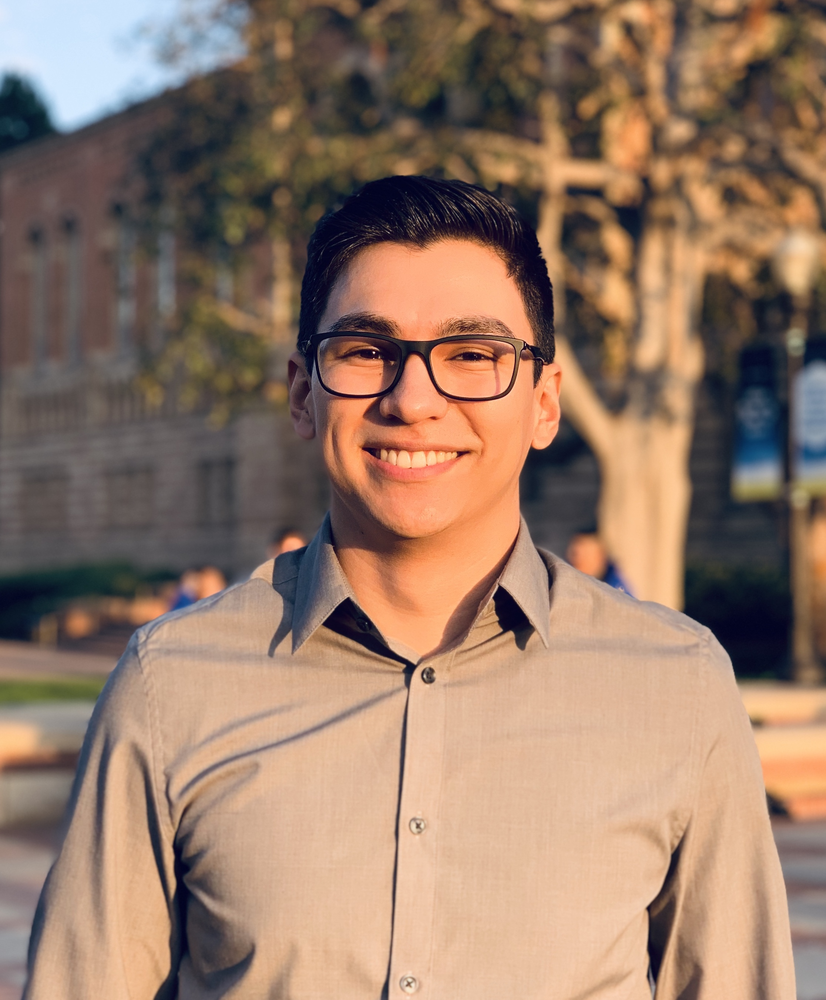

Hello everyone! My name is Mauricio Gutierrez and I am a third year transfer student at UCLA. I am a Communication Studies major with a computing specialization which means that I am taking this boot camp along with my other classes. It gets pretty busy if I am being honest but I have to work hard if I want to be successful in life. I used to work for UCLA's Reslife as a Transfer Experience intern in the transfer dorms but every since COVID-19 I have been out of work. Because of my experience in UCLA Reslife I was accepted as an RA for next school year so hopefully this whole COVID thing ends before then.
I live in Santa Clarita, California (around the Magic Mountain). Thankfully COVID hasn't hit here that hard yet but the number of infected grows by the day. For hobbies I like to play video games and watch anime. Currently I do not have a favorite anime but I have many like Death Note, One Punch Man, JoJo's Bizarre Adventure, My Hero Academia, Dr. Stone, Seven Deasly Sins, My Shield Hero, and few more. I also like to collect fountain pens and draw on fancy paper for fun.